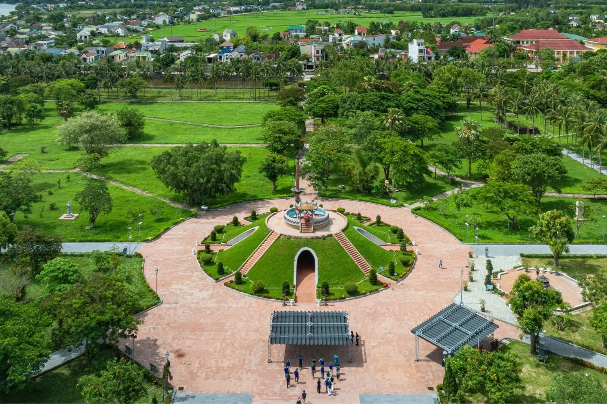
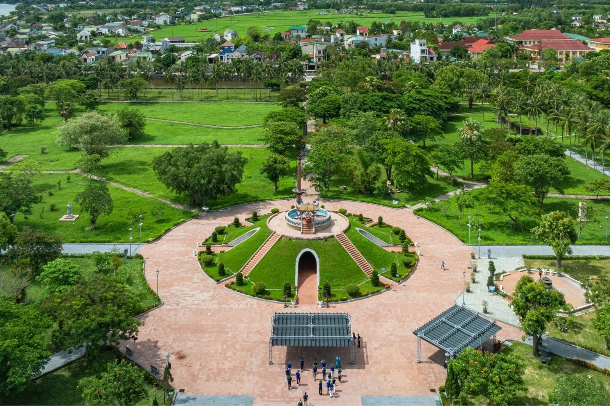
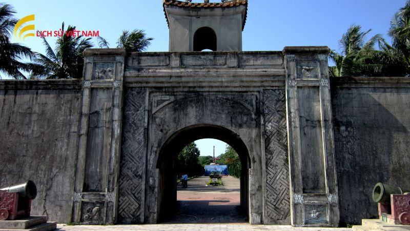
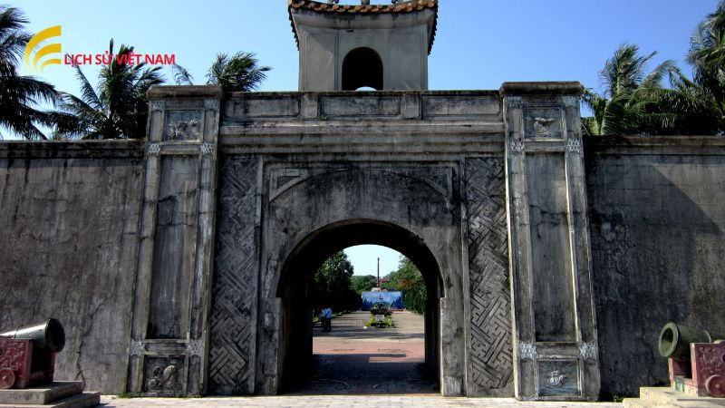

Giới Thiệu Tổng Quan
Thành cổ Quảng Trị là biểu tượng cho ý chí kiên cường của dân tộc Việt Nam. Nơi quân và dân ta đã anh dũng chống trả bom đạn ác liệt, và ngày nay trở thành một địa điểm tâm linh, giáo dục lịch sử quan trọng bên dòng sông Thạch Hãn lịch sử. Là nơi đã chịu đựng 328.000 tấn bom đạn tương đương với 7 quả bom nguyên tử, chỉ vọn vẹn 25ha nhưng những chiến sĩ nơi này đã chịu đựng trung bình 100 quả bom, 200 quả đạn pháo trong 81 ngày đêm giành lại độc lập.
Đò lên Thạch Hãn ơi... chèo nhẹ
Đáy sông còn đó bạn tôi nằm
Có tuổi hai mươi thành sóng nước
Vỗ yên bờ bãi mãi ngàn năm
(Trích thơ "Lời người bên sông" - Lê Bá Dương)
Trên báo Quân đội nhân dân dân số này ra 9 tháng 8 năm 1972 đã viết “mỗi mét vuông đất tại thành cổ Quảng Trị là 1m máu và sự hy sinh của các anh đã trở thành bất tử. Khi lòng yêu nước đã lên đến tột cùng thì cái chết cũng nhẹ nhàng như hòa mình vào dòng nước chảy. Là cuộc đọ sức ác liệt giữa Quân Giải phóng miền Nam và quân đội Sài Gòn do Mỹ hỗ trợ, nhằm giành lại quyền kiểm soát thị xã Quảng Trị, gây sức ép cho Hội nghị Paris.
Tư Liệu Ảnh Đẹp Về Thành Cổ Quảng Trị
 


 

Nguồn ảnh: dantri.com, nhandan.com, sovaba.travel, qdnd.vn, vov.vn, lichsuvietnam.org